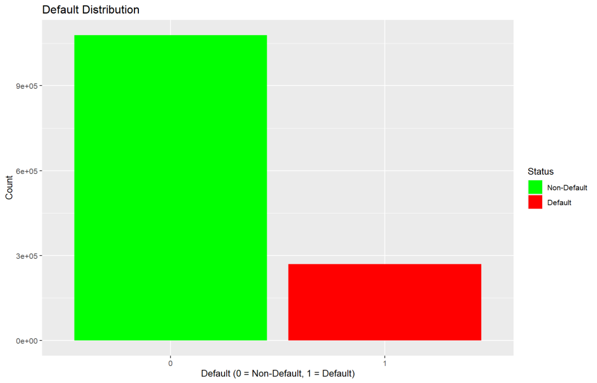
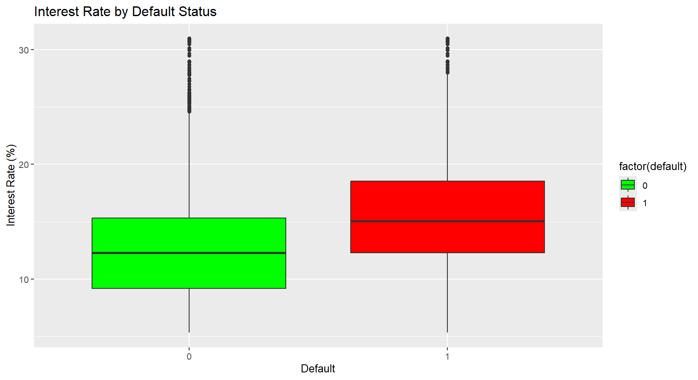
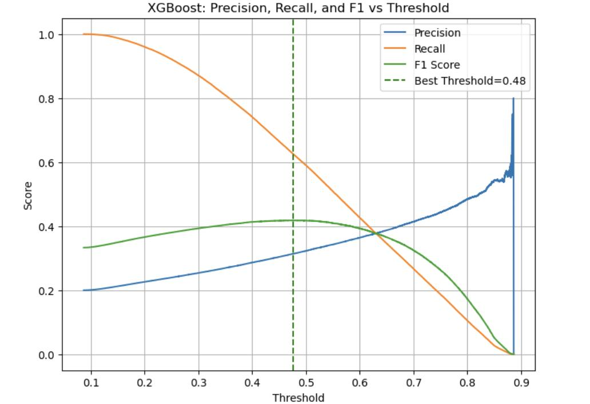
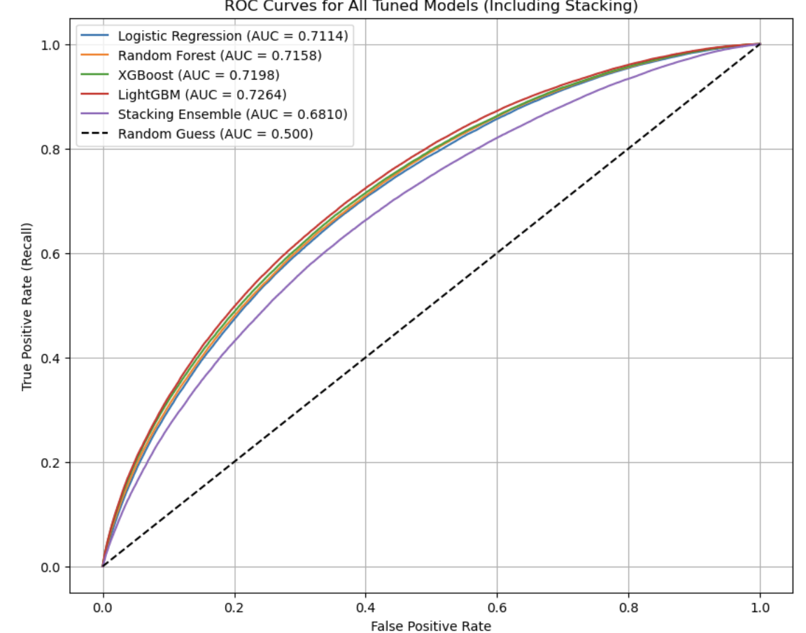
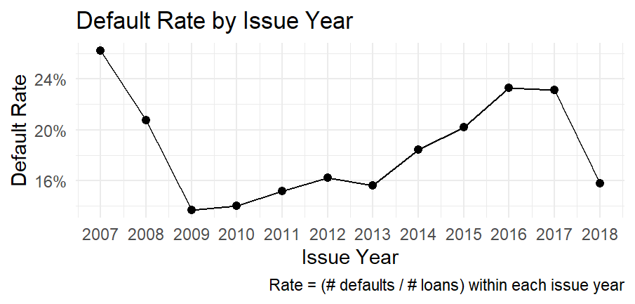
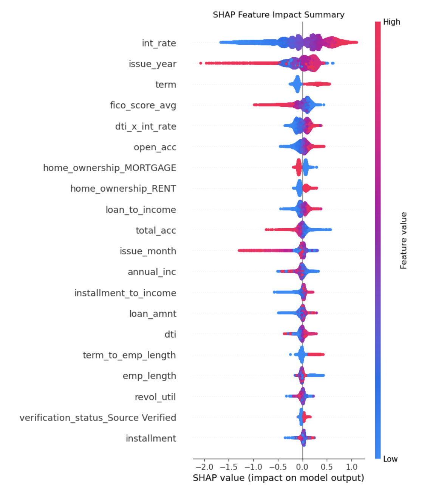

Loan Default Prediction
MSc dissertation building a credit risk model on Lending Club loan data from 2007 to 2018, using only information available before a lending decision is made. Awarded a Distinction.
About the project
Lenders need to estimate the chance a borrower will default before approving a loan. Many published models on this dataset report high accuracy figures, but do so by including information that only exists after a loan has been issued, such as repayment history. That inflates results and produces a model that cannot actually be used at the point of decision.
This project restricts the feature set to what is known at origination. The result is a lower headline score than much of the published work on this dataset, but one that reflects what the model could realistically achieve in deployment.
The data problem
Two characteristics of the dataset shaped the whole approach: the classes are heavily imbalanced, and interest rate carries a strong signal that turns out to dominate the final model.

This is why accuracy is the wrong metric here. An untuned Random Forest reached 80% accuracy while catching only 6% of actual defaults, which is useless to a lender. The work focused on recall, F1, and AUC instead.

Approach
The work ran in four phases, each addressing a problem the previous phase exposed.
1. Baselines
Logistic Regression with balanced class weights, and a default Random Forest. Logistic Regression handled the imbalance better out of the box. Random Forest scored well on accuracy but barely detected defaults at all.
2. Resampling and threshold tuning
SMOTE alone gave limited improvement. SMOTE-ENN, which combines oversampling with noise removal, worked better. Lowering the classification threshold from 0.50 down toward 0.25 raised recall substantially at the cost of precision.
3. Boosting
XGBoost and LightGBM reached similar results to the tuned Random Forest but needed less aggressive threshold adjustment. PCA was tested and made no meaningful difference, so it was dropped.
4. Feature engineering and cost sensitivity
Added temporal indicators, credit history aggregates, and a sentinel encoding with a missingness flag for delinquency recency. Cost-sensitive weighting was applied so misclassifying a defaulter carried a heavier penalty.

Results
The final LightGBM model, using the enhanced feature set with cost-sensitive weighting, reached an F1 score of 0.44 and an AUC of 0.73. The gain in F1 over earlier models was modest, but the higher AUC showed better ranking ability, meaning the model ordered borrowers by risk more reliably even at a fixed threshold.

The models sit close together, which is itself a finding. Once leakage is removed and only origination-time features remain, there is a ceiling on how much signal is available, and model choice matters less than the framing of the problem.
Temporal effects
Default rates vary considerably by the year a loan was issued, peaking around the financial crisis and again in 2016 and 2017. Adding issue year as a feature let the model account for these cohort effects rather than treating all loans as if they came from the same conditions.

Interpretability
Credit models are subject to regulatory explainability requirements, so a model that cannot justify its decisions is not deployable regardless of its scores. SHAP values were used to explain both overall model behaviour and individual predictions.

Higher interest rates and lower FICO scores pushed predictions toward default, while higher income and verified applications reduced predicted risk. These are the relationships a credit analyst would expect, which is a useful check that the model learned something sensible rather than an artefact of the data.
What I'd do differently
- Test whether a model trained on earlier cohorts holds up on later ones, rather than using a random split, since the temporal variation in default rates suggests it might not
- Frame the threshold choice around actual cost figures for a missed default versus a rejected good applicant, instead of optimising F1
- Look at calibration rather than ranking alone, since a lender pricing risk needs the predicted probabilities to be meaningful, not just correctly ordered